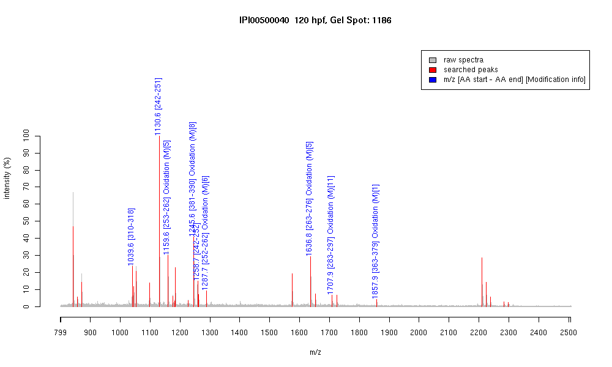

IPI00500040 :: Gel Spot=1186
| Name | "Tubulin, beta, 2" |
|---|
| MW | 49755 |
|---|
| PI | 4.79 |
|---|
| Mascot Protein Score | 89 |
|---|
| Masses (matched / unmatched) | 9 / 25 |
|---|

| Peptide | MZ (calc) | MZ (observed) | Error (DA) | Error (PPM) | Start | Stop | Modifications |
|---|
| YLTVAAVFR | 1039.5935 | 1039.5906 | -0.0029 | -3 | 310 | 318 | |
| FPGQLNADLR | 1130.5953 | 1130.5999 | 0.0046 | 4 | 242 | 251 | |
| LAVNMVPFPR | 1159.6292 | 1159.6292 | 0 | 0 | 253 | 262 | Oxidation (M)[5] |
| ISEQFTAMFR | 1245.5933 | 1245.5935 | 0.0002 | 0 | 381 | 390 | Oxidation (M)[8] |
| FPGQLNADLRK | 1258.6902 | 1258.6798 | -0.0104 | -8 | 242 | 252 | |
| KLAVNMVPFPR | 1287.7241 | 1287.7156 | -0.0085 | -7 | 252 | 262 | Oxidation (M)[6] |
| LHFFMPGFAPLTSR | 1636.8304 | 1636.8304 | 0 | 0 | 263 | 276 | Oxidation (M)[5] |
| ALTVPELTQQMFDAK | 1707.8622 | 1707.8735 | 0.0113 | 7 | 283 | 297 | Oxidation (M)[11] |
| MAATFIGNSTAIQELFK | 1857.9415 | 1857.9172 | -0.0243 | -13 | 363 | 379 | Oxidation (M)[1] |